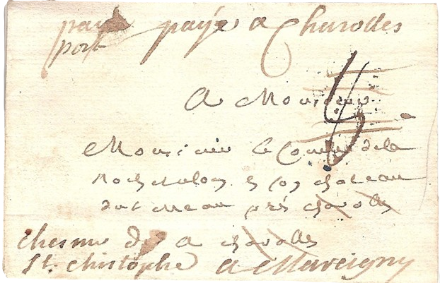
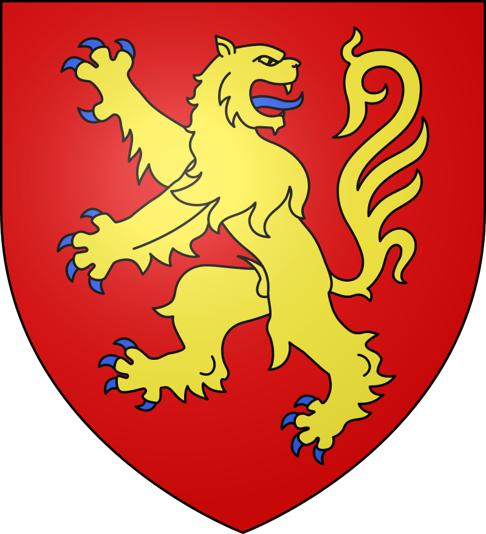

Bureau ouvert le 1er octobre 1766
Service postal secondaire antérieurement
| Marque | N° | Port | Dimensions | Date | Couleurs | Indice | Cote | ||||
|---|---|---|---|---|---|---|---|---|---|---|---|
| 1 | port dû | 33mm | 1773-1785 | noir | I-14 | 00.00 | |||||
| 2 | port dû | 41mm | 1776-1782 | rouge | I-16 | 00.00 | |||||
| 2A | port dû | 41mm | 1774-1790 | noir | I-15 | 00.00 | |||||
| 3 | port dû | 31mm | 1787-1791 | noir | I-14 | 00.00 | |||||
| 4 | port payé |  |
1768-1791 | manuscrit | I-20 | 00.00 | |||||
|  | 4A | port payé | |
1768-1791 | manuscrit | I-20 | 00.00 | ||||
| 5 | Port payé accompagnée d'un PP encerclé. | 1785-1790 | noir | I-29 | 00.00 | ||||||
| 6 | port dû | 28mm | 1771-1772 | noir | I-22 | 00.00 | |||||

|
7 | déboursé | |
1775-1785 | manuscrit | I-20 | 00.00 | ||||
| 8 | port dû | |
1768-1771 | manuscrit | I-19 | 00.00 | |||||
| Le comté de Charollais est un petit pays enclavé dans la Bourgogne, appartenant à la maison d'Autriche jusqu'en 1684. Ensuite, il a ses Etats particuliers jusqu'en 1751, pour être réuni définitivement à la couronne en 1771. | |||||||||||
Depuis le XVIIem siècle, il y a un service de messagers très bien exposé par
P. Nougaret. En 1766, la Ferme des Postes décide de supprimer ce service et de créer un réseau de bureaux de poste.
(Délibération du 24.11.1766) "...la Compagnie considérant que le service des messagers étant très lent, il fallait 15 jours pour recevoir réponse parce qu'ils partaient alternativement
tous les 15 jours, allaient et revenaient par des routes différentes. La Compagnie a jugé convenable d'établir dans le Comté de Charolles des bureaux en titre et un service en règle.
|
|||||||||||
|

Blason de Charolles |
|||||||||||